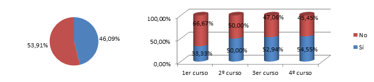
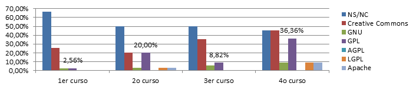
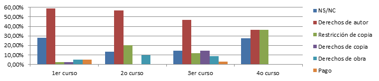
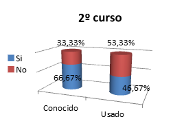
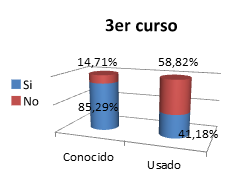

¿Cuánto sabes sobre el software libre y sus licencias?
Queremos concienciar a los estudiantes de la Facultad de Informática UCM

Este obra está bajo una licencia de Creative Commons Reconocimiento-CompartirIgual 4.0 Internacional.
Introducción y objetivos
El trabajo que aquí se detalla tiene un doble carácter. Por una parte, consiste en analizar qué nivel de conocimientos tienen sobre algunos aspectos de la asignatura de Ética, Legislación y Profesión (ELP) los alumnos de la Facultad de Informática de la UCM antes de cursar dicha asignatura. Para ello, el método seleccionado ha sido realizar encuestas a dichos alumnos. Por otro lado, el trabajo tiene una intención educativa, ya que tras realizar las encuestas, los alumnos han sido informados mediante un tríptico sobre el contenido de las mismas, aclarando las dudas que pudieran haber surgido durante su realización.
Descripción
Se ha realizado el cuestionario a un total de 115 alumnos de los cursos 1º, 2º y 3º de los diferentes grados en Informática, así como a alumnos de 1º, 2º, 3º y 4º del Doble Grado en Ingeniería Informática y Matemáticas. A efectos de la encuesta, consideramos el curso más alto en el que los alumnos tengan alguna asignatura, siendo lo esencial que no hayan cursado (ni estén cursando) ELP.
Tras realizar las encuestas, todos los alumnos que participaron recibieron un tríptico, confeccionado por el grupo, en el que se detalla la información relevante que aparece en las preguntas del cuestionario, así como alguna información extra relacionada con los temas tratados.
Cuestionario
El cuestionario que contestaron los alumnos puede consultarse aquí.
Tríptico informativo
Tras realizar el cuestionario, los alumnos recibieron el siguiente tríptico.
Análisis de los resultados
Entre los 115 estudiantes encuestados se encuentran 39 alumnos del primer curso, 30 de segundo, 34 de tercero, 11 de cuarto y un erasmus.
A continuación realizamos un análisis de cada una de las preguntas de la encuesta. Éste análisis será tanto global como particular de cada curso.
1. ¿Quién es Richard Stallman?Como vemos en la gráfica el 56,52% de los encuestados no saben quién es Richard Stallman, el 16,52% afirma que es el precursor del software libre, con un 12,17% se encuentran los alumnos que piensan que es el fundador de GNU mientras que un 9,57% lo relaciona con el software libre sin concretar mucho el papel que tiene dentro de esto.
Cabe destacar en las gráficas de grupos cómo del 87,18% de personas que desconocen a Stallman en 1º pasa a un 53,33% en el 2º curso reduciéndose en cada curso hasta llegar al 18,18% de personas que lo desconocen en 4º.
2. ¿Sabes qué características tiene el software libre? ¿Debe ser siempre gratuito?En el caso de las características del software libre tenemos un 33% de desconocimiento a nivel general, pasando del 41% en el primer curso a un 30% entre los estudiantes de segundo curso y descendiendo hasta un 23,53% en el tercer curso. Destaca un alto porcentaje entre los alumnos de cuarto que tienen un 36,36% que posiblemente se deba al bajo número de alumnos preguntados en ese curso (11).
Por otro lado las características que más se han repetido sobre software libre son “Abierto” con un 31,30%, “Modificable” con un 27,83% y “Uso libre” con un 15,65%. En los tres primeros cursos varían un poco los porcentajes pero siguen siendo éstas las características que más se repiten. Y como en la pregunta anterior, es en el cuarto curso donde aparecen algunas diferencias, ya que ninguno de los entrevistados considera el uso libre como característica del software libre y sin embargo, la característica que más se repite es la de “Gratuito”.
A la pregunta de si el software libre tiene que ser gratuito hay un 38,26% de votos negativos frente al 25,22% que creen que si es libre tiene que ser gratuito. Por lo que el porcentaje restante, 36,52%, no tenían conocimiento de la respuesta.
Separando las respuestas por cursos vemos que en los tres primeros cursos el “No” se repite más veces que el “Sí” salvo en el cuarto curso que sucede lo contrario.
3. ¿Puedo proteger mi trabajo con alguna licencia y que siga siendo software libre?En esta pregunta la gran mayoría (77,39%) defienden que si es posible proteger un trabajo con una licencia permitiendo que el software sea libre, por otro lado los defensores de que no es posible lo anterior suman el 13,04% dejando solo un 9,57% de alumnos que no han contestado.
Separados por cursos podemos ver como en todos los cursos predomina el sí con un alto porcentaje, y salvo en segundo curso que cuenta con un 33,33% de alumnos que apuestan por el “No”, en los demás cursos el porcentaje es menor del 10% al igual que los que no han contestado, que en cada curso están por debajo del 15%.
4. ¿Conoces alguna licencia de software? ¿Cuáles?
Menos de la mitad de los estudiantes preguntados (46,09%) afirma conocer alguna licencia software. En el primer curso solo un tercio de los estudiantes cree conocer una o varias licencias de software, este porcentaje aumenta en cada curso llegando al 54,55% en cuarto y pasando por un 50% en segundo y casi el 53% en tercero.
A la pregunta de cuáles son las licencias software conocidas, se tiene un porcentaje del 54,78% de no respuesta, siendo los alumnos de primer curso los que más se han abstenido a responder.
Por otro lado la respuesta más repetida y sin embargo errónea es la de “Creative Commons” con un 28,70% de aparición estando sus porcentajes más altos en los cursos tercero y cuarto con un 35% y un 45% respectivamente.
La licencia real que más veces se ha repetido es la GPL con un 12,17%, teniendo su mayor porcentaje entre los alumnos de cuarto curso (36,36%), y curiosamente con un porcentaje mayor en el segundo curso (20%) que en tercero (8,82), y con un porcentaje casi nulo en primero.
Las demás licencias como Apache o LGPL apenas han sido nombradas por los estudiantes, Apache tiene un 3,48% y LGPL no llega ni al 2%.
5. ¿Liberarías tu código con una licencia Creative Commons?¿Por qué?
Casi la mitad de los encuestados (45,22%) no han contestado a esta pregunta y solo 3 personas de 115 (2,61%) la ha contestado y argumentado bien. La respuesta correcta es que no, ya que las licencias Creative Commons están destinadas a contenidos artísticos y no a software, sin embargo el 31,30% de los encuestados ha afirmado que sí liberaría su codigo con una licencia CC, un 13% ha contestado que depende y casi el 8% ha contestado que no, pero dando razones inválidas.
Las personas que han acertado la respuesta pertenecen una al primer curso y las otras dos al tercero.
6. Marca cuáles de los siguientes programas crees que tienen una licencia libre: Google Chrome, uTorrent, Eclipse, Mozilla Firefox, Microsoft Office, Telegram.En esta pregunta, las respuestas correctas han sido las más seleccionadas. Eclipse y Mozilla Firefox superan el 60%, (65,22% y 63,48% respectivamente) mientras que Telegram es conocida que es de licencia libre por la mitad de los encuestados (50,43%).
Por otro lado de los programas que no tienen licencia libre, uTorrent ha sido el que mayor error ha causado con un 40,87% de votaciones, el siguiente ha sido Google Chrome (23,48%) y por último Microsoft Office ha dado una tasa de error bastante baja con apenas un 5,22%.
Por cursos podemos ver como eclipse no llega al 50% en primero posiblemente porque no se usa en la carrera hasta el segundo curso, y es en este curso y en cursos mayores donde los encuestados sitúan eclipse por encima de 65%.
Por otro lado Firefox ha sido muy votado en el primer curso con algo más del 70% reduciéndose este porcentaje en el segundo y tercer curso a un 57% y 38% respectivamente.
En todos los cursos, UTorrent es, dentro de los que no deberían de ser seleccionados, el que mayor porcentaje de votos ha tenido (en torno al 40% en los tres primeros cursos, bastante menos en el cuarto curso). Y por el contrario Microsoft Office ha sido el menos seleccionado y por tanto una tasa de error muy baja en todos los cursos con un 0% en los dos cursos mayores.
Destacar también que los alumnos de cuarto han contestado de forma bastante certera a esta pregunta con un 100% de acierto respecto a Firefox y a Microsoft Office, altos porcentajes certeros en Chrome y Eclipse y algo menos (60-70%) en Telegram y uTorrent.
7. ¿Qué es el copyright? ¿Y el copyleft? ¿Cuál se aplica por defecto ante la ausencia de licencia de una obra?El porcentaje de personas que han contestado a la pregunta sobre el copyright es del 80%.
Algo más de la mitad de los alumnos (54,78%) relacionan el copyright con los derechos de autor, el 13,04% creen que el copyright es el derecho a la restricción de copia de las obras de algún autor. Otros términos que han utilizado los alumnos para referirse al copyright, aunque con porcentajes bastante bajos son el derecho de obra (5,22%), derechos de copia (5,22%) o el derechos de cobrar dinero por sus obrar (2,61%).
El porcentaje de los que opinan que el copyright son los derechos de autor se mantiene en torno al 50% en los tres primeros cursos descendiendo un poco en el cuarto curso. Por otro lado los que opinan que el copyright esta relacionado con el tema de pago de obras y remuneración tienen un porcentaje muy bajo en todos los cursos por debajo del 6%.
El resto de opciones elegidas (restricción de copia, Derechos de copia, Derechos de obra) varían su porcentaje en función del curso, entre el 0 y el 20% cada una en los tres primeros cursos.
La pregunta sobre el copyleft ha sido la pregunta con menor número de respuestas, solo el 21% de los encuestados ha contestado y un 2,61% afirma que no existe ese término. Del 18% restante, la mayoría (12,17%) relaciona el copyleft con las obras libres de restricciones. El resto, con muy bajos porcentajes concretan más y creen que el copyleft es la posibilidad de copiar obras, o la posibilidad de hacer copias de las obras o los que opinan que es el poder de vender las copias de otras obras.
Estos porcentajes varían muy poco si los separamos por cursos. Salvo en el último curso, donde el porcentaje de participación ha sido mayor aunque el resultado no varía. Una mayoría de los defensores de la opción de obras “libres” de restricciones y nulas en las demás salvo una opinión de la no existencia del término.
Por último, poca participación de nuevo en la pregunta sobre qué se aplica por defecto ante la ausencia de licencia de una obra (30%), votos divididos entre los que opinan que por defecto se aplica copyright (11%) y los que opinan que el copyleft (18%) habiendo un alumno que ha contestado que ninguno de los dos.
8. ¿Cuántos años dura el copyright en España? ¿Qué ocurre pasado ese tiempo con la obra?
La mayoría (61,74%) no supo responder a esta pregunta. Tres alumnos de los 115 preguntados (2,61%) afirman que es copyright dura un tiempo ilimitado. El 26% no tuvo en cuenta la muerte del auto, y la mayoría de estos sitúa la duración del copyright por debajo de los 50 años (incluido).
Por último, aproximadamente el 10% tuvo en cuenta la muerte del autor a la hora de contestar, y ninguno se excedió con la duración aunque solo un alumno (de segundo curso) acertó en la respuesta (70 años después de la muerte del autor).
En cuanto a qué ocurre con la obra vuelve a haber un alto porcentaje de alumnos sin contestar (60,87%), y de los que contestaron la mayoría opina que la obra queda libre de restricciones (33,91%) y el 6% restante de divide entre los que opinan que la el copyright pasa a los hijos, los que creen que la obra queda gratuita, y otros que defienden que el copyright se puede renovar.
El porcentaje que más varía en cada curso particular es el de participación, los otros varían ligeramente.
9. ¿Conoces GitHub? ¿Has subido algún proyecto a GitHub?El 62,61% de los alumnos conoce GitHub pero solo un 27,83% lo han usado alguna vez.
 Analizando por grupos vemos como solo el 35% de los alumnos de primer curso conocen GitHub y solo un 2,56% (1 persona) lo ha usado estos porcentajes aumentan en segundo curso y más aún en tercero, donde un 85,29% de los estudiantes conocen GitHub y la mitad de ellos (41,18%) lo ha usado alguna vez. Estas estadísticas se distorsionan en el cuarto curso debido a bajo número de encuestados de ese curso.
10. ¿Qué significa hacer un fork de un proyecto?El 63,48% no ha sabido contestar a esta pregunta, y solo el 13,04% ha acertado en la respuesta.
Por otro lado en 15,65% (mayor que los aciertos) cree que hacer un fork es hacer una copia de un proyecto mientras que el 7,83% piensa que es hacer un branch del proyecto.
Los alumnos de primero desconocen en su mayoría el término fork ya que casi el 90% no ha contestado a la pregunta y solo un 5% la ha contestado bien, en segundo en cambio en los siguientes cursos ya tenemos que el porcentaje de los que no contestaron a la pregunta cae de un 60% en segundo hasta un 45,45% en cuarto, y la tasa de acierto se mantiene en estos cursos en torno al 17%. Las respuestas de copia y branch aumentan también en estos cursos con una ligera mayoría de la primera.
Conclusiones
El conocimiento de los alumnos sobre el contenido de la asignatura ELP es, en general, escaso. Aunque ello no quiere decir inexistente, puesto que podemos ver que la mayoría de la gente es capaz de relacionar a Richard Stallman con el software libre o son conscientes de que pueden proteger sus trabajos con licencias libres. Pese a ello, sigue habiendo errores recurrentes que son muy frecuentes. Hay dos casos muy significativos sobre esto: el primero es la afirmación más o menos generalizada de la protección de software con licencias Creative Commons; el segundo es la confusión entre software libre y la gratuidad (lo que también genera la confusión entre software libre y freeware). Esto último queda patente cuando casi el 41% de los encuestados contesta que uTorrent es software libre cuando no es así (está protegido con copyright aunque la compañía licencia de forma gratuita el uso personal). Algo similar ocurre con Google Chrome. En ambos casos es "queda prohibido copiar, modificar, descompilar o intentar extraer el código fuente del Software total o parcialmente, crear trabajos derivados o realizar ingeniería inversa del mismo"
Una de los temas que más espacios en blanco ha dejado ha sido el del copyright. Tanto en cuanto a que es aquello que se aplica por defecto como el tiempo de duración, llegado a darse casos en que declaran que el copyright es ilimitado o no saben que su fin está relacionado con la muerte del autor. En cualquier caso es destacable el alto porcentaje de alumnos que no contestan a la pregunta relacionada con la duración del copyright (un 60%). El copyleft, ese gran desconocido: sólo el 21% ha contestado a esta parte de la séptima pregunta y hay un porcentaje muy reducido que considera que este término no existe, lo cual es notorio. Las respuestas suelen ser vagas e imprecisas, y sólo el 12% lo relaciona correctamente con la libre distribución.
Algo similar ocurre con GitHub. Alrededor de un 60% lo conoce pero menos de la mitad lo ha utilizado, aunque el porcentaje tanto de conocimiento como de uso crece a medida que nos desplazamos a los cursos superiores.
Para concluir, no es atrevido decir que los alumnos llegan muy verdes a Ética, Legislación y Profesión. Es particularmente sangrante el tema de las licencias y el copyright, pues es fundamental que los futuros ingenieros informáticos conozcan qué clase de protección pueden aplicar a sus futuras obras como conocer qué derechos les reconoce la ley a tal efecto. Por otro lado, ya no sólo como ingenieros sino como usuarios de las tecnologías y muy en particular de Internet y todos los recursos que pone a nuestro alcance, es imprescindible bajo qué condiciones ese material disponible puede ser reutilizado en nuestras obras (bien porque se libera bajo una licencia Creative Commons, pertenece al dominio público, etc.) o si no puede hacerse (gran cantidad de este material está protegido con copyright y esa restricción muchas veces se viola de forma sistemática y generalizada). Además, consideramos otro punto al que se presta poca atención es al de los Términos de Uso de diversos servicios (especialmente servicios web) y es necesaria educación como usuarios de estas plataformas para ser conscientes de cuál es su uso correcto, qué limitaciones imponen los prestadores del servicio y qué hacen estos con nuestra información personal.
Finalmente, queremos hacer una propuesta para tratar de solventar esta situación y conseguir una mejor formación de nuestros futuros ingenieros. Podrían organizarse actividades formativas de carácter introductorio y divulgativo, no muy extensas (queremos conseguir el interés de los presentes) además de hacer un seguimiento anual (podría ser con unas encuestas de entidad similar a la que se ha presentado en este trabajo) con objeto de evaluar si estas actividades formativas logran sus objetivos y mejoran los índices de conocimiento sobre los contenidos de la asignatura Ética, legislación y profesión.
Póster
Con el objetivo de difundir al máximo nuestro trabajo hemos creado el siguiente póster, que será expuesto en los tablones de la Facultad. Con él tratamos de invitar a todos los estudiantes a visitar esta página y conocer así los resultados de nuestro estudio.

Utopías y distopías
En esta sección nos proponemos llevar a un extremo nuestro trabajo e imaginar las consecuencias o implicaciones que pudiera tener a 30 años vista. Así, hemos desarrollado un par de utopías y distopías que os presentamos a continuación.
Érase una utopía30 de Septiembre de 2045
Los nuevos alumnos de la Facultad de Informática de la Universidad Complutense de Madrid entran a un nuevo mundo de aprendizaje, laboratorios y puertas moradas. Tras su primeros pasos por la facultad, pronto ven que en su calendario tienen programadas una serie de actividades extrañas que incluyen conferencias y debates en las que les informan de algunos temas importantes como las licencias y el software libre, les familiarizan con algunos personajes clave en la informática como Richard Stallman y les enseñan algunas herramientas de esencial utilidad para ellos como GitHub, que les permite incrementar exponencialmente su visibilidad para las futuras empresas.
Gracias a estas actividades en su primer año, la curiosidad de los alumnos se despierta y además de seguir las pautas aprendidas, también siguen investigando sobre estos temas aumentando su conocimiento sobre ellos. La mayoría de ellos deciden desde el comienzo de su carrera utilizar las licencias de software aprendidas, y subir sus proyectos a GitHub colaborando así con la gran familia del software libre, cuyo auge ha seguido aumentando sin igual durante las últimas décadas. Además, son conscientes del material que utilizan, teniendo especial cuidado con el copyright de ciertas obras.
Al movernos un par de aulas más allá, nos encontramos a los alumnos que ya están en su cuarto año de carrera, en su clase de Ética, Legislación y Profesión, donde tienen la oportunidad de abordar temas morales de gran complejidad, y debatir la gran oferta de profesiones abarcables en su futuro midiendo las consecuencias éticas de cada decisión. Los debates que se realizan como parte de la asignatura atraen la atención de compañeros de otros cursos, hasta tal punto que ahora se realizan en la sala de grados y cuentan entre el público no sólo con esos compañeros deseosos de llegar ya al momento de cursar Ética, sino también con la presencia de profesores que buscan enfrentarse a temas controvertidos explorando diversos puntos de vista.
Además, son estos mismos alumnos que están cursando la asignatura los encargados de informar a los alumnos de nuevo ingreso sobre lo que ellos mismos aprendieron tres años atrás, realizando encuestas para comprobar su conocimiento antes de empezar dichas actividades, así como encuestas tras la realización de las mismas para ver todo lo aprendido. Por otra parte, también realizan encuestas de seguimiento a los alumnos de segundo y tercer año para comprobar la progresión casi siempre ascendente de sus conocimientos.
Estos conocimientos se entroncan dentro de los conocimientos básicos que se presupone deben saber los estudiantes antes de embarcarse en la carrera y así a la hora de cursar la asignatura de Ética, Legislación y Profesión, se puede partir ya de una base más avanzada y explorar temas más controvertidos, consiguiendo que los alumnos salgan con un conocimiento amplio y variado de los dilemas éticos y las problemáticas legales a las que se pueden tener que enfrentar en su futuro profesional.
Este tipo de prácticas formativas, que fueron originarias de la Facultad de Informática de la Complutense en el año 2015 y que despertaron interés tras unos años de implantación, llevan ya más de quince años siendo comunes en todas las facultades de informática de Madrid, así como en la mayoría de las facultades de informática del resto de España. Es más, son muchas las facultades de otras carreras en las que se han empezado a realizar actividades de este tipo, dando a los alumnos de nuevo ingreso algunos conocimientos clave que deben aprender cuanto antes pues les serán útiles a lo largo de la carrera. Este entre otros motivos puede explicar la mejora de la calidad de la universidad pública española de los últimos años, que cuenta ya con 24 universidades entre las 100 mejores de Europa y con 13 entre las 200 mejores del mundo.
Érase otra utopíaCorre el año 2030, y como cada año, desde 2016, los altos cargos de la facultad se proponen fomentar el software libre e informar a los estudiantes sobre licencias de código. Para ello, cada año se realizan unas encuestas con preguntas sobre temas que se tratan en la asignatura de ELP a 300 alumnos aleatorios. Además se les hace entrega de un folleto con información acerca de las preguntas que había en dicha encuesta y se les informa sobre dónde pueden ver los resultados de las encuestas una vez hayan sido analizadas. Por otra parte la fdi ofrece la asistencia gratuita a charlas sobre estos temas en el salón de actos de la facultad.
Las charlas, las encuestas con sus resultados y la información aportada sobre los temas anteriormente dichos han sido un éxito, los alumnos están cada vez más concienciados con el software libre, han conseguido ayudarse unos a otros tanto para prácticas de la carrera como para proyectos personales e incluso se ayudan los unos a los otros en temas laborales, gracias al uso de Github. La tasa de suspenso de la facultad es mínima y las grandes compañías se pelean entre ellas por contratar a los estudiantes de esta facultad, gracias a la forma de trabajar en equipo y el auge del software libre en el mundo contemporáneo.
Érase una distopía30 de Septiembre de 2045
Phil salió de casa aquella mañana triste, anodina y gris. No sabía muy bien por qué, pero era lo que hacía siempre. Como todos los días llevaba sus láminas y su estuche consigo. Se encaminó hacia la zona sur de la ciudad, junto a la estación del novotren. Bajo la gigantesca estructura de acero se encontraba aquel extraño amasijo de hierros que hacía las veces de asiento y en el que pasaba tantas horas, ya no era capaz de recordar cuántas. Mirando al frente, sacó una lámina nueva y el utensilio de dibujar (¿aquel artefacto tuvo alguna vez otro nombre?) y se dispuso a plasmar algo en el vacío lienzo blanco. Como todos los días, nada. Nada que dibujar. No podía. Nadie podía. Esa angustia se apoderaba de nuevo de él.
La vida de Phil no había sido así antes. Hubo un tiempo en que disfrutaba dibujando. Lo había hecho mientras era un niño, y lo había hecho después. Tras su paso por La Academia encontró trabajo de dibujante en un pequeño estudio de animación que producía series infantiles. El auge del dibujo asistido por ordenador provocó que aquel estudio se hiciese importante y Phil había tenido que asumir cada vez más responsabilidades alejadas de dibujar: reuniones con clientes, reuniones con accionistas, tiras y aflojas con productoras… Aquello acabó con él. Abandonó el barco y decidió reencontrarse a sí mismo a través del dibujo.
Aquella época para él coincidió con un ciclo de cambios a nivel social y especialmente político: las nuevas generaciones, nacidas a final de siglo, tomaban las riendas de los países y las empresas. La generación más preparada se hacía protagonista de su futuro. La Gran Crisis provocó una competencia feroz en el mundo de la cultura, y las empresas se lanzaron en busca de nuevos recursos. Fijaron su objetivo en las obras libres y se las apropiaron. Los políticos, influenciados por estas, legislaron a su favor dando prorrogando el copyright indefinidamente y convirtieron el dominio público en propiedad privada que repartió amistosamente entre las principales compañías de la industria cultural.
La industria del software también había sufrido una suerte similar. Las empresas tecnológicas siguieron los pasos de la industria audiovisual y se fijaron en el software libre. Los nuevos ingenieros, víctimas de la desaparición de las asignaturas de legislación de sus planes de estudios debido al escaso interés (motivado principalmente por la ignorancia y el desconocimiento) que generaban, se subieron al carro del copyright indefinido pensando únicamente en la obtención de dinero. Esta situación alarmó sobremanera a la FSF y a las Universidades, que trataron de atajar la dejadez animando a los estudiantes a cursar estas asignaturas de legislación, haciéndolas más atractivas. De nada sirvió. Las cifras no mentían, cada vez había menos interés y más desconocimiento.
La FSF, descabezada tras la muerte (no exenta de polémica) de Richard Stallman, no tuvo opción de defenderse. La cultura quedaba entonces en manos de los nuevos conglomerados audiovisuales y tecnológicos surgidos durante estos años. Así, la creación cultural había quedado al dictado de las empresas y de los intereses económicos. Ninguna persona podía hacerlo por su cuenta, pues quedaba expuesto a la expropiación de su obra y a grandes sanciones económicas inasumibles en muchos casos.
¿Para qué dibujar entonces? Phil no lo sabía. El sonido del novotren lo trajo de vuelta. Tenía delante algo que otrora fue un árbol, y un viejo puente destartalado en desuso, pues el río hacía lustros que no llevaba agua. A veces, cuando era capaz de pensar con claridad se lamentaba de aquella situación que le impedía expresarse con el dibujo. De nada serviría, alguien se quedaría con lo que dibujase. Y menos allí. La libertad de panorama, abolida hace años, había condenado a la ilegalidad los paisajes. En los momentos en que Phil era capaz de pensar con claridad se lamentaba de todo esto. Maldecía a los políticos por haberse sometido a la presión de las grandes compañías, ignorantes de todas las consecuencias que sus decisiones podrían conllevar. Pero también maldecía a la sociedad que lo había permitido. Al final, la generación más preparada resultó ser la más ignorante. Ignorante por obviar otros modelos para proteger las obras y lograr beneficios con ellas.
Así se podría haber luchado contra los poderosos, contra los lobbys y conseguir una sociedad un poco más libre. Una sociedad que, consciente de su poder, podría haber dado la vuelta al modelo de negocio cultural y haber hecho la cultura de verdad libre y accesible a todos. Ahora eran todos pensamientos vacuos e irrealizables.
Por el tiempo que había pasado debía haber caído la noche. Phil recogió sus cosas y volvió a casa. Con las manos vacías otra vez. Como todos los días, nada.
Érase otra distopíaAño 2030, los alumnos de la facultad de informática de la UCM no muestran interés por temas de software libre, licencias de códigos, copyright… La facultad concreta unas charlas sobre temas de estos pero los alumnos desinteresados en estos temas deciden perder el tiempo en la cafetería antes de ir a estas charlas. A las tres primeras charlas van tres, una y dos personas respectivamente, por lo que se cancelan las demás charlas y la imagen de la facultad cae en picado, saliendo incluso en algunos periódicos estudiantiles. A parte de las charlas los estudiantes apenas acuden a la asignatura de ELP por lo mismo, les hablan de un tal Richard Stallman del que nunca han oído hablar, apenas saben lo que es el software libre, por lo que apenas hay asistencia a las clases de esta asignatura.
Tras varias reuniones, se decide eliminar la asignatura de ELP del plan de estudios de las carreras ofertadas en la facultad, los alumnos salen de la carrera sin conocimientos acerca de software libre, Github, creative commons…, y la fdi de la UCM se encuentra entre las cinco facultades cuyos alumnos tienen una tasa de paro mayor del 80% al salir de la carrera, ya que el uso del software libre está en pleno auge en estos años y es un conocimiento muy valorado por las empresas del momento.